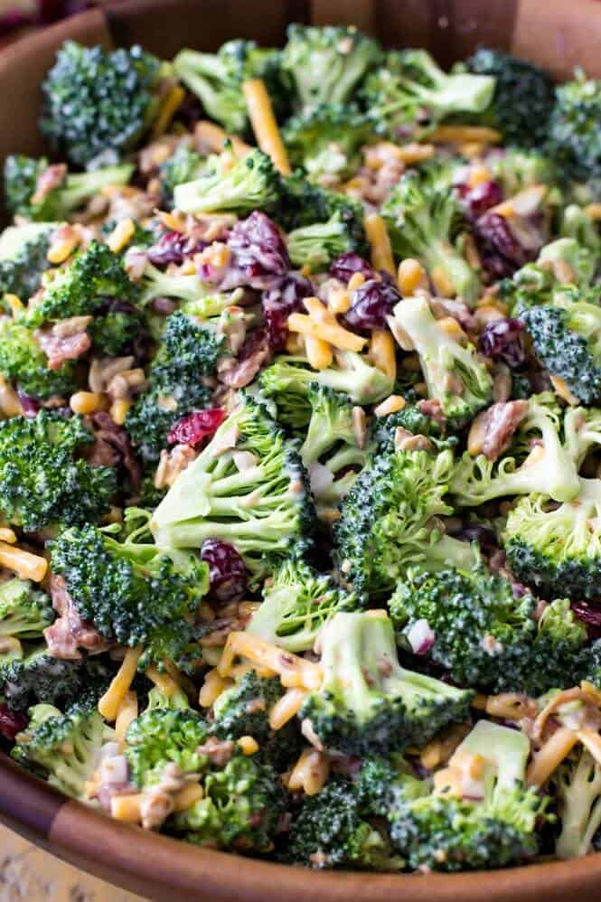

Broccoli Salad

Description
This broccoli salad with bacon and cheese is requested at every
family gathering. Let it be your next dish that they crave! I like
this dish to be prepared at least two hours before serving. Be sure
to have copies of the recipe on hand, as everyone will ask for it!
Ingredients
- 8 slices bacon
- 2 heads fresh broccoli, chopped
- 1 ½ cups sharp Cheddar cheese, shredded
- ½ large red onion, chopped
- ⅔ cup mayonnaise
- ¼ cup red wine vinegar
- ⅛ cup white sugar
- 2 teaspoons ground black pepper
- 1 teaspoon salt
- 1 teaspoon fresh lemon juice
Steps
- Place bacon in a large, deep skillet. Cook over medium-high heat until crisp and evenly browned,
8-10 minutes. Transfer to a paper towel-lined plate and crumble when cool enough to handle.
- Combine bacon, broccoli, cheese, and onion in a large bowl.
- Whisk mayonnaise, red wine vinegar, sugar, pepper, salt, and lemon juice together in a small
bowl; pour over salad and toss to combine. Cover and refrigerate until ready to serve.